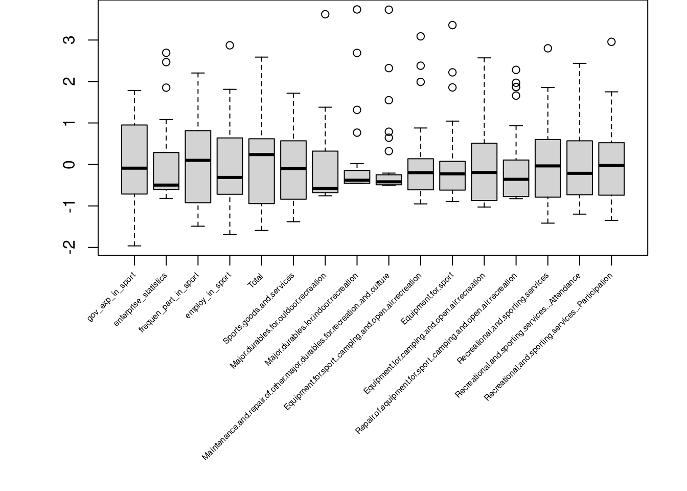
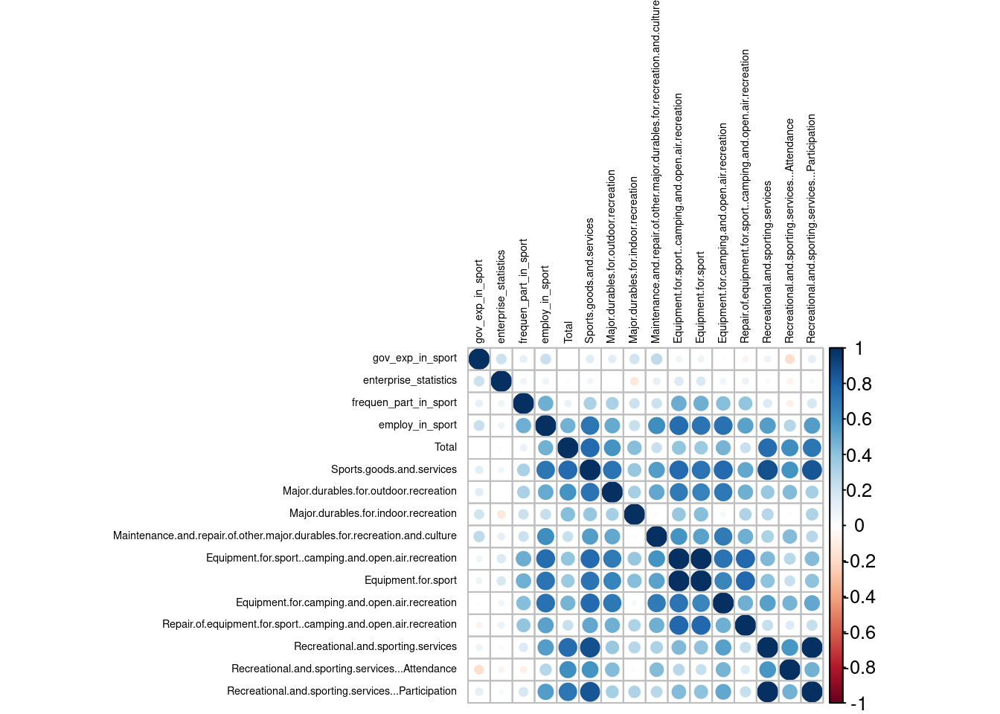
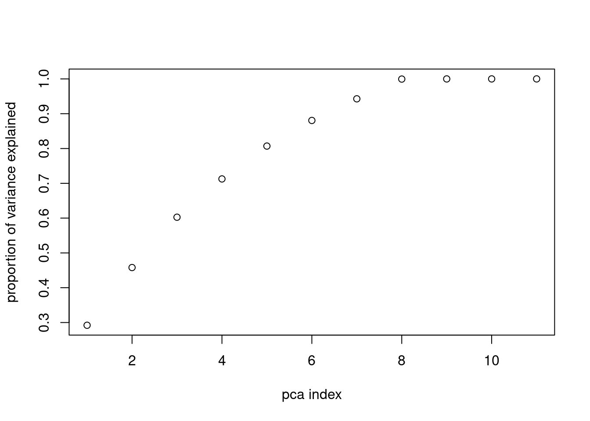
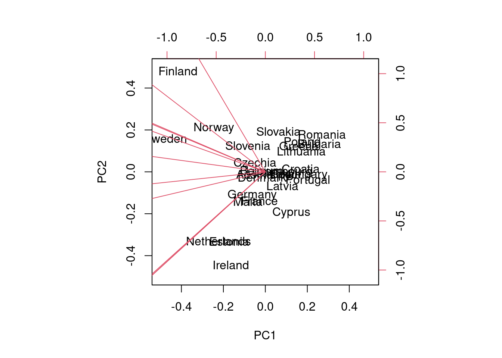

[1] 28 16Sports and its employment: a spatial regression view
Indice
Introduzione
La regressione lineare spaziale è un’importante modello statistico utilizzato per esaminare la relazione tra una variabile di risposta e una o più variabili esplicative in presenza di dati geografici. Questa metodologia combina gli aspetti della regressione lineare tradizionale con l’incorporazione di una struttura spaziale, tenendo conto della correlazione spaziale tra le osservazioni.
In questo contesto, il presente lavoro statistico si propone di analizzare l’occupazione nello sport nei Paesi europei in funzione di alcune variabili come la spesa pubblica per lo sport dei Paesi, la spesa delle famiglie in ambito sportivo, il numero di imprese che producono articoli o servizi sportivi e la partecipazione sportiva delle famiglie nei Paesi dell’Unione europea. Per condurre un’analisi di regressione lineare spaziale, è necessario avere informazioni sulla posizione geografica dei paesi per poter incorporare la struttura spaziale nell’analisi, oltre alle misurazioni delle variabili di interesse.
L’obiettivo è determinare se esiste una relazione significativa tra queste variabili e come questa relazione possa essere influenzata dalla componente spaziale.
Una volta che i dati sono stati raccolti, puliti e aggregati, il primo passo consiste nell’esplorare le caratteristiche delle variabili. Saranno eseguite analisi descrittive per ottenere una visione generale della distribuzione di frequenza dei Paesi. Successivamente, sarà necessario valutare la correlazione spaziale tra le osservazioni con gli opportuni indici.
Dopo esserci accertati della scarsa applicabilità della stima ordinaria dei minimi quadrati, impiegheremo una famiglia di modelli di regressione lineare spaziale: General Nesting Spatial Model che verrà presentato successivamente.
Infine, sarà valutato e selezionato il modello che presenta migliori misure di bontà di adattamento, attraverso il criterio di informazione di Akaike (AIC).
Questo lavoro statistico si propone, quindi, di analizzare la dinamica dell’impiego nello sport utilizzando un approccio di regressione lineare spaziale. L’obiettivo è fornire una comprensione quantomeno introduttiva di come la spesa pubblica, privata e la frequenza di partecipazione ad eventi sportivi possa influenzare tale variabile, considerando anche il contesto spaziale. I risultati ottenuti da questa analisi potrebbero essere utilizzati per informare politiche e strategie volte a risollevare il mercato del lavoro in ambito sportivo e influenzare, di conseguenza, anche la partecipazione sportiva nei diversi Paesi in base alle loro caratteristiche economiche.
Esplorazione e Manipolazione del dataset
Passiamo ora alla fase di studio delle caratteristiche del nostro dataset. Il dataset corrisponde alla classificazione NUTS 1 eurostat con riferimento all’anno 2015. Da notare la residua numerosità delle osservazioni:
Ossia 28 Paesi e 16 variabili osservate. Le piccole dimensioni della nostra matrice dei dati ci costringe a pensare bene ai possibili modelli applicabili e ad ai problemi di tipo numerico che potrebbero presentarsi.
Per ottenere il dataset completo sono stati uniti diversi sotto-dataset come si può vedere dai link di cui sopra, tale procedimento ha portato ad eliminare quei Paesi che non erano presenti in ogni sotto-dataset (come Islanda e Serbia).
Osservando i primi 5 Paesi, notiamo che le variabili prese in considerazione sono tutte di carattere quantitativo:
In particolare:
gov_exp_in_sport: è la percentuale di spesa pubblica impiegata nello sport in percentualeenterpise_statistics: è il numero di imprese legate allo sport nel Paese di riferimento (sia beni che servizi)frequen_part_in_sport: la percentuale di famiglie che ha partecipato negli ultimi 12 mesi a eventi sportiviTotal: spesa totale media delle famiglie in euro- il resto delle variabili sono relative alla spesa delle famiglie in ambito sportivo in euro
Prima di procedere alla vera e propria esplorazione capiamo come R rappresenta in memoria tali osservazioni:
'data.frame': 28 obs. of 16 variables:
$ gov_exp_in_sport : chr "0.6" "0.7" "1.0" "1.0" ...
$ enterprise_statistics : chr "85" "49" "53" "33" ...
$ frequen_part_in_sport : chr "19.1" "11.8" "10.6" "14.2" ...
$ employ_in_sport : chr "0.87" "0.43" "0.35" "0.30" ...
$ Total : chr "34.491" "34.923" "12.517" "20.163" ...
$ Sports.goods.and.services : chr "454.4" "448.2" "27.6" "110.7" ...
$ Major.durables.for.outdoor.recreation : chr "47.6" "137.6" "4.8" "2.7" ...
$ Major.durables.for.indoor.recreation : chr "0.6" "7.1" "0" "0" ...
$ Maintenance.and.repair.of.other.major.durables.for.recreation.and.culture: chr "3.2" "2.3" "1.5" "3.4" ...
$ Equipment.for.sport..camping.and.open.air.recreation : chr "101.6" "47" "4" "12.6" ...
$ Equipment.for.sport : chr "94" "37.2" "3.5" "10.6" ...
$ Equipment.for.camping.and.open.air.recreation : chr "5.9" "9.6" "0.6" "1.6" ...
$ Repair.of.equipment.for.sport..camping.and.open.air.recreation : chr "1.7" "0.2" "0" "0.4" ...
$ Recreational.and.sporting.services : chr "301.4" "254.2" "17.2" "92" ...
$ Recreational.and.sporting.services...Attendance : chr "46.5" "68.8" "1.5" "15.1" ...
$ Recreational.and.sporting.services...Participation : chr "254.9" "185.3" "15.7" "76.9" ...Le variabili per il software sono di tipo “char”, questo non ci permetterebbe di manipolarle e usarle successivamente nei modelli di interesse. Quindi dobbiamo procedere a renderle di tipo numerico.
'data.frame': 28 obs. of 16 variables:
$ gov_exp_in_sport : num 0.6 0.7 1 1 0.8 0.9 0.7 1 0.9 1 ...
$ enterprise_statistics : num 85 49 53 33 0 499 62 24 143 656 ...
$ frequen_part_in_sport : num 19.1 11.8 10.6 14.2 11.1 21.8 28.5 16.7 26.8 17 ...
$ employ_in_sport : num 0.87 0.43 0.35 0.3 0.53 0.54 1.06 0.77 1.26 0.68 ...
$ Total : num 34.5 34.9 12.5 20.2 35.6 ...
$ Sports.goods.and.services : num 454.4 448.2 27.6 110.7 310.3 ...
$ Major.durables.for.outdoor.recreation : num 47.6 137.6 4.8 2.7 8 ...
$ Major.durables.for.indoor.recreation : num 0.6 7.1 0 0 0.2 0.4 0 0 16.8 1.5 ...
$ Maintenance.and.repair.of.other.major.durables.for.recreation.and.culture: num 3.2 2.3 1.5 3.4 0 0.7 2.2 0 20.7 2.4 ...
$ Equipment.for.sport..camping.and.open.air.recreation : num 101.6 47 4 12.6 11.5 ...
$ Equipment.for.sport : num 94 37.2 3.5 10.6 10.8 ...
$ Equipment.for.camping.and.open.air.recreation : num 5.9 9.6 0.6 1.6 0.6 5.3 22.9 7.9 14 7.3 ...
$ Repair.of.equipment.for.sport..camping.and.open.air.recreation : num 1.7 0.2 0 0.4 0.1 0.7 0.5 0.3 3 0.7 ...
$ Recreational.and.sporting.services : num 301.4 254.2 17.2 92 290.7 ...
$ Recreational.and.sporting.services...Attendance : num 46.5 68.8 1.5 15.1 65 12.2 38.3 9.3 26.3 40.5 ...
$ Recreational.and.sporting.services...Participation : num 254.9 185.3 15.7 76.9 225.6 ...Inoltre, il numero di valori nulli ammonta a:
[1] 0
Quindi non dobbiamo preoccuparci di eliminare altre osservazioni.
Guardiamo ora alcune choropleth maps delle variabili del nostro dataset:
Spesa pubblica. Non sembra presentare dei pattern spaziali, infatti i Paesi con alta spesa pubblica impiegata nello sport non sono visibilmente raggruppati e possiamo trovarli sia a Nord che a Sud Europa.
Spesa per famiglia in sport goods and serivices. Per questa variabile si nota chiaramente una correlazione spaziale, le famiglie dei Paesi più a Nord formano chiaramente un gruppo e sono quelle che spendono di più per beni e servizi sportivi.
Partecipazione ad eventi sportivi. In questo caso la relazione geografica sembra dividere gli stati in due gruppi: Ovest-Est, dove quelli più orientali presentano una partecipazione ad eventi sportivi molto più alta.
Occupazione (lavorativa) nello sport. Per quanto riguardo l’occupazione lavorativa si ritorna al primo pattern visto: i Paesi del Nord Europa vedono tutti un maggiore impiego nel settore sportivo rispetto a quelli meridionali.
Come si può vedere non tutti i Paesi sono presenti nelle misure appena analizzate, per questo motivo sono stati scartati, come si accennava precendentemente.
Analizziamo ora, tramite dei boxplot, in maniera più approfondita le distribuzioni di frequenza delle variabili normalizzate: sottraiamo ad ogni dato la media e dividiamo per la sua deviazine standard (per colonna), ossia per l’\(i\)-esima riga e la \(j\)-esima colonna: \[ z_{ij} = \frac {x_{ij} - \mu_j}{\sigma_j} \]

I boxplot presentano caratteri assai discordanti:
- Abbiamo alcune variabili che presentano delle distribuzione poco asimmetriche, che sembrano platicurtiche in quando non molto concentrate intorno alla loro mediana (come:
gov_exp_in_sport,frequen_part_in_sport,Sport.goods.and.services) - Un altro gruppo di boxplot mette in risalto il carattere asimmetrico ma comunque poco concentrato di alcune variabili (come:
Total,Recreational.and.sporting.services...AttendanceeEquipment.for.camping.and.open.air.recreation) - Poi abbiamo un ultimo tipo di distribuzione molto concentrata e con diversi outliers (come:
Major.durables.for.indoor.recreationeMaintenance...major.durables.for.recreation.and.culture)
Per completare l’analisi esplorativa dei dati, analizziamo la matrice delle correlazioni per capire se possono presentarsi problemi di multicollinearità nei dati:

Come potevamo prevedere abbiamo una generale alta correlazione tra tutte quelle variabili che rappresentano la spesa sportiva delle famiglie in tutte le sue declinazioni; in aggiunta, è interessante notare che la frequenza di partecipazione ad eventi sportivi (frequen_part_in_sport) è correlata con tutte quelle variabili che indicano una spesa delle famiglie in sport ricreativi all’aria aperta.
Principal Component Analysis
La analisi in componenti principali viene solitamente utilizzata per racchiudere l’informazione nei dati in meno variabili più trattabili ma meno interpretabili. In questo lavoro si è deciso di utilizzare la PCA a causa dell’evidente sproporzione tra numero di osservazioni e variabili, in particolare abbiamo effettuato la PCA solo per il range di variabili da Sports.goods.and.services in poi e dopo averle divise tutte per Total per avere una misura relativa della spesa per lo sport, questo perchè tali variabili rappresentano tutte una diversa angolazione della spesa per famiglia nello sport. Ciò ci ha permesso di avere una sorta di indice per il consumo delle famiglie nello sport senza rinunciare alla interpretabilità delle altre variabili. Sicuramente il costo che si paga è proprio l’interpretazione di queste nuove variabili.

Il plot ci mostra che le prime 3 componenti principali “spiegano” una sufficiente proporzione di varianza per questo motivo si è deciso di inserire tali componenti nel dataset al posto delle variabili da Total in poi, come detto.
Utilizziamo un biplot per comparare i loadings delle prime due componenti princiali rispetto alle variabili di partenza, questo plot è usato per vedere se le componenti principali possono indicare dei veri e propri fattori latenti; nel caso in cui le variabili si dispongono in gruppi ben definiti in maniera logica l’ipotesi dei/del fattore latente sarebbe confermata (per esempio: se tutti Paesi le cui famiglie spendono poco in attrezzature sportive si raggruppano in un’area del grafico biplot possiamo dire che una determinata componente principale cattura quel fattore latente che non era possibile osservare prima della scomposizione):

Purtroppo non è questo il caso, il biplot non è molto informativo in questo senso. Viene, quindi, riportato per una completa analisi delle componenti principali.
Il dataset ora si presenta così:
Fitting dei modelli
Il General Nesting Spatial Model (GNS) è un modello statistico utilizzato per analizzare dati geografici che presentano una struttura di effetti spaziali derivante da più fonti: sia da parte delle variabili dipendenti, sia dalle covariate locali ma anche effetti di “shock” possono propagarsi tra i vicini con i termini di errore. Questo modello, inoltre, può essere visto come è una generalizzazione del modello di regressione lineare.
Infatti, sia \(𝐘\) un vettore di variabili di risposta osservate, \(\textbf{X}\) una matrice di covariate (variabili esplicative) e \(𝛃\) un vettore di coefficienti associati a \(\textbf{X}\); il modello di regressione lineare tradizionale può essere espresso come:
\[𝐘 = \textbf{X}𝛃 + \boldsymbol{\epsilon} \]
dove \(\boldsymbol{\epsilon}\) rappresenta il termine di errore.
Nel contesto del GNS, la correlazione spaziale tra le unità osservate viene modellata utilizzando una matrice di pesi spaziali, \(𝐖\), che riflette la vicinanza spaziale tra le unità. Questa matrice può essere basata su misure di distanza euclidea, contiguità o altre metriche di vicinanza. Il termine che tiene conto dell’autocorrelazione spaziale tra le unità della variabile dipendente osservate è rappresentato da \(𝜌\), mentre \(𝜆,𝛉\) sono dei parametri che tengono conto dell’influenza spaziale degli errori casuali e delle covariate, rispettivamente.
Quindi, il modello GNS risulta essere: \[ 𝐘 = 𝜌𝐖𝐘 + \textbf{X}𝛃 + 𝐖\textbf{X}𝛉 + \boldsymbol{\epsilon} \] con \[ \boldsymbol{\epsilon} = 𝜆𝐖\boldsymbol{\epsilon} + 𝐮, 𝐮\sim{\mathcal{N}(\textbf0, 𝜎_\textbf{u}^2𝐈)} \] dove \(𝜌,𝜆, 𝛃, 𝛉\) sono come abbiamo detto, i parametri incogniti che bisogna stimare nel modello (i parametri con font normale sono scalari mentre il grassetto indica che sono vettori). Notiamo che se tutti i coefficienti tranne \(𝛃\) sono pari a zero ci ritroviamo con il modello di regressione classico visto all’inizio.
Centrale nell’analisi con il GNS è stimare i coefficienti \(𝜌,𝛉\), che riflettono l’effetto delle correlazioni spaziali e le covariate esplicative, rispettivamente. Queste stime possono essere ottenute utilizzando approcci di stima come la massima verosimiglianza o i minimi quadrati generalizzati.
Dal GNS derivano numerosi altri modelli a seconda delle combinazioni dei coefficienti che l’analista decide di azzerare; nella nostra analisi li stimeremo tutti per poi selezionare quello che ha l’AIC più alto, ossia l’Akaike informatin criterion \({\displaystyle \mathrm {AIC} \,=\,2k-2\ln({\hat {L}})}\) dove \(k\) è il numero di parametri mentre \({\hat {L}}\) è la stima di massima verosimiglianza.
La matrice di pesi spaziali nel nostro caso è una matrice quadrata (28x28) sparsa con valore 1 nella posizione \(i,j\) se il paese \(i\) confina con \(j\). Inoltre si è deciso per le isole o i Paesi che non confinano con nessun altro nel dataset di considerare il Paese più vicino come confinante.
Possiamo ora passare alla stima dei modelli.
Per prima cosa costruiamo un modello OLS per stabilire se questo è sufficiente a modellizzare i nostri dati. E’ da preferire un buon modello semplice in casi come questo in cui abbiamo pochi dati. Questo il risultato:
Call:
lm(formula = employ_in_sport ~ ., data = df)
Residuals:
Min 1Q Median 3Q Max
-0.22114 -0.14326 -0.02759 0.07290 0.51510
Coefficients:
Estimate Std. Error t value Pr(>|t|)
(Intercept) 0.3790859 0.2135638 1.775 0.0904 .
gov_exp_in_sport 0.1809944 0.1753105 1.032 0.3136
enterprise_statistics -0.0001102 0.0002244 -0.491 0.6285
frequen_part_in_sport 0.0102399 0.0095715 1.070 0.2968
pca1 -0.0954868 0.0198178 -4.818 9.22e-05 ***
pca2 -0.0072712 0.0314583 -0.231 0.8194
pca3 0.0142971 0.0351668 0.407 0.6885
---
Signif. codes: 0 '***' 0.001 '**' 0.01 '*' 0.05 '.' 0.1 ' ' 1
Residual standard error: 0.2113 on 21 degrees of freedom
Multiple R-squared: 0.6615, Adjusted R-squared: 0.5648
F-statistic: 6.841 on 6 and 21 DF, p-value: 0.0003943Il summary ci mostra come l’OLS non ci fornisce un buon modello, le variabili non sono significative, tranne la prima componente principale; un R-squared adjusted non sufficiente ma di media misura ed una probabilità che tutti i coefficienti siano contemporaneamente 0 bassa ci suggeriscono che possiamo cercare un modello migliore per il nostro scopo.
Per verificare quantitativamente se è rispettata l’ipotesi di normaità e per la presenza di autocorrelazione degli errori eseguiamo due test: il test di Jarque e Bera ed il test di Moran sui residui, rispettivamente. Con il primo diagnostichiamo la mancata verifica di una delle ipotesi fondamentali per le stime OLS; il secondo, invece, è pensato specificamente per capire se è corretto applicare un modello di regressione spaziale ai nostri dati, per questo dobbiamo fornire anche la matrice \(𝐖\).
Jarque Bera Test
data: residuals(OLS)
X-squared = 8.6727, df = 2, p-value = 0.01308
Global Moran I for regression residuals
data:
model: lm(formula = employ_in_sport ~ ., data = df)
weights: W
Moran I statistic standard deviate = 2.6308, p-value = 0.008519
alternative hypothesis: two.sided
sample estimates:
Observed Moran I Expectation Variance
0.35791396 -0.08923104 0.02888868 Il JB test risulta non essere significativo questo potrebbe indurci a prensare che anche l’applicazione di un modello diverso che tenga conto di fattori spaziali non ci condurrà ad una soluzione migliore; il test di Moran, invece, sembra dire il contrario, data la sua significatività decidiamo che sia il caso, allora, di cercare un modello che, come detto, introduca dei termini di relazione spaziale tra le variabili.
Spatial Lag Model
Iniziamo con la stima dello Spatial Lag Model in cui i parametri \(𝜆,𝛉\) sono volutamente posti uguali a 0, l’unico termine che introduce correlazione spaziale è \(𝜌\). Questo è un modello in cui la relazione spaziale è :
Call:lagsarlm(formula = (employ_in_sport ~ .), data = df, listw = W,
Durbin = FALSE, zero.policy = TRUE, tol.solve = 1e-14)
Residuals:
Min 1Q Median 3Q Max
-0.233661 -0.118169 -0.041400 0.092218 0.454548
Type: lag
Coefficients: (asymptotic standard errors)
Estimate Std. Error z value Pr(>|z|)
(Intercept) 0.08904515 0.18154077 0.4905 0.6237825
gov_exp_in_sport 0.18872797 0.13516191 1.3963 0.1626211
enterprise_statistics -0.00012264 0.00017229 -0.7118 0.4765668
frequen_part_in_sport 0.01295211 0.00736450 1.7587 0.0786247
pca1 -0.06772848 0.01816292 -3.7289 0.0001923
pca2 -0.03500541 0.02534734 -1.3810 0.1672700
pca3 0.01733365 0.02699524 0.6421 0.5208081
Rho: 0.36522, LR test value: 5.1564, p-value: 0.02316
Asymptotic standard error: 0.14209
z-value: 2.5704, p-value: 0.010158
Wald statistic: 6.6069, p-value: 0.010158
Log likelihood: 10.40627 for lag model
ML residual variance (sigma squared): 0.026297, (sigma: 0.16216)
Number of observations: 28
Number of parameters estimated: 9
AIC: -2.8125, (AIC for lm: 0.3439)
LM test for residual autocorrelation
test value: 0.49454, p-value: 0.48191Possiamo subito vedere come questo modello sia di gran lunga migiore rispetto al’OLS le cui stime non erano lontanamente significative, ora sia il coefficiente di gov_exp_in_sport che frequen_part_in_sport presentano probabilità di essere diversi da zero più alta, pca1 continua ad essere significativo, ma anche il termine spaziale introdotto \(𝜌\) pare migliorare il modello con una significatività dello 0.014189.
Spatial Error Model
Lo Spatial Error model è un particolare modello in cui il carattere spaziale è riflesso solamente dal termine di errore spaziale, ossia \(𝜆\); gli altri parametri spaziali sono nulli:
Call:errorsarlm(formula = (employ_in_sport ~ .), data = df, listw = W,
Durbin = FALSE, zero.policy = TRUE, tol.solve = 1e-14)
Residuals:
Min 1Q Median 3Q Max
-0.200055 -0.127370 -0.058819 0.101443 0.424208
Type: error
Coefficients: (asymptotic standard errors)
Estimate Std. Error z value Pr(>|z|)
(Intercept) 0.27206276 0.16089740 1.6909 0.09085
gov_exp_in_sport 0.23688438 0.13275745 1.7843 0.07437
enterprise_statistics -0.00016527 0.00017363 -0.9518 0.34119
frequen_part_in_sport 0.01483501 0.00708747 2.0931 0.03634
pca1 -0.08212881 0.01940208 -4.2330 2.306e-05
pca2 -0.02273346 0.02903686 -0.7829 0.43368
pca3 0.01367860 0.02494879 0.5483 0.58351
Lambda: 0.4348, LR test value: 4.9317, p-value: 0.026369
Asymptotic standard error: 0.15514
z-value: 2.8027, p-value: 0.0050672
Wald statistic: 7.8553, p-value: 0.0050672
Log likelihood: 10.29389 for error model
ML residual variance (sigma squared): 0.025822, (sigma: 0.16069)
Number of observations: 28
Number of parameters estimated: 9
AIC: NA (not available for weighted model), (AIC for lm: 0.3439)Lo Spatial Error, dai tali risultati, sembra essere un buon modello; frequen_part_in_sport e gov_exp_in_sport sono significative e i loro coefficienti alti per quanto riguardo l’impatto sulle \(\textbf{Y}\), pca1 continua ad affermare la sua rilevanza nel modello. Anche \(\lambda\) mostra un coefficiente positivo e singificativo a dimostrazione dell’autocorrelazione degli errori.
Spatial Durbin Model
Il prossimo modello è uno dei più utilizzati nella regressione spaziale a causa della sua capacità di cogliere delle relazioni complesse, nello Spatial Durbin o SDM l’unico parametro nullo è \(𝜆\), ciò vuol dire che la variabile dipendente è influenzata sia dalle variabili dipendenti delle altre regioni che dalle variabili indipendenti delle regioni vicine:
Call:lagsarlm(formula = (employ_in_sport ~ .), data = df, listw = W,
Durbin = TRUE, zero.policy = TRUE, tol.solve = 1e-14)
Residuals:
Min 1Q Median 3Q Max
-0.202297 -0.087653 -0.036808 0.071430 0.427285
Type: mixed
Coefficients: (asymptotic standard errors)
Estimate Std. Error z value Pr(>|z|)
(Intercept) 0.17089874 0.43804230 0.3901 0.69643
gov_exp_in_sport 0.24625510 0.16806578 1.4652 0.14286
enterprise_statistics -0.00015977 0.00018443 -0.8663 0.38632
frequen_part_in_sport 0.01507627 0.00797434 1.8906 0.05868
pca1 -0.06143182 0.02433932 -2.5240 0.01160
pca2 -0.03556076 0.03453973 -1.0296 0.30322
pca3 0.00564484 0.03158671 0.1787 0.85817
lag.gov_exp_in_sport -0.15282693 0.27205051 -0.5618 0.57428
lag.enterprise_statistics 0.00027144 0.00030270 0.8967 0.36987
lag.frequen_part_in_sport -0.00731006 0.01117638 -0.6541 0.51307
lag.pca1 0.00513666 0.03553072 0.1446 0.88505
lag.pca2 0.04054846 0.06346156 0.6389 0.52286
lag.pca3 0.01055542 0.06335840 0.1666 0.86769
Rho: 0.40478, LR test value: 3.9854, p-value: 0.045897
Asymptotic standard error: 0.15945
z-value: 2.5387, p-value: 0.011128
Wald statistic: 6.4448, p-value: 0.011128
Log likelihood: 11.34938 for mixed model
ML residual variance (sigma squared): 0.024238, (sigma: 0.15569)
Number of observations: 28
Number of parameters estimated: 15
AIC: 7.3012, (AIC for lm: 9.2866)
LM test for residual autocorrelation
test value: 0.092634, p-value: 0.76086In questo caso il modello non sembra apportare grossi miglioramenti rispetto ai precedenti, le variabili che prime erano significative rimangono tali nelle relative intensità, ma quello che più ci induce a pensare di scartare tale modello è la non rilevanza in termini di significatività dei \(\textit{lag(x)}\), dove lag di x è un modo alternativo per indicare le \(\textbf{X}\) nelle regioni vicine (da \(\textbf{W}\)). L’SDM ci conferma l’importanza del termine di autocorrelazione spaziale tramite \(\rho\).
SARAR
Passiamo ora al modello denominato modello SARAR (spatial autoregressive model with autoregressive disturbances of order (1, 1)). E’ solitamente applicato quando i metodi precedentemente discussi (Spatial lag e SDM) non rimuovono in modo adeguato l’autocorrelazione spaziale dei residui, in quanto l’unico parametro spaziale ipotizzato nullo è \(𝛉\); stiamo, quindi, supponendo che le covariate delle regioni vicine non influenzano la \(y\) di una regione:
Call:sacsarlm(formula = (employ_in_sport ~ .), data = df, listw = W,
Durbin = FALSE, zero.policy = TRUE)
Residuals:
Min 1Q Median 3Q Max
-0.205506 -0.116963 -0.062057 0.108781 0.447697
Type: sac
Coefficients: (asymptotic standard errors)
Estimate Std. Error z value Pr(>|z|)
(Intercept) 0.13456243 0.22972887 0.5857 0.5580472
gov_exp_in_sport 0.22574373 0.13468794 1.6760 0.0937284
enterprise_statistics -0.00015340 0.00017496 -0.8768 0.3806053
frequen_part_in_sport 0.01445260 0.00730628 1.9781 0.0479165
pca1 -0.07532005 0.02254519 -3.3408 0.0008352
pca2 -0.03022665 0.02956931 -1.0222 0.3066719
pca3 0.01628586 0.02600728 0.6262 0.5311811
Rho: 0.22548
Asymptotic standard error: 0.26531
z-value: 0.84988, p-value: 0.39539
Lambda: 0.23492
Asymptotic standard error: 0.31989
z-value: 0.73439, p-value: 0.46271
LR test value: 5.6458, p-value: 0.059432
Log likelihood: 10.65097 for sac model
ML residual variance (sigma squared): 0.026196, (sigma: 0.16185)
Number of observations: 28
Number of parameters estimated: 10
AIC: -1.3019, (AIC for lm: 0.3439)La funzione summary di R per questo modello ci offre dei risultati controintuitivi, abbiamo visto fino precedentemente che i modelli con \(\lambda\) e \(\rho\) (Spatial Error e Spatial Lag) ci avevano suggerito una relazione importante e significativa della variabile dipendente sia con essa stessa nelle altre regioni, sia con gli errori spazialmente autocorrelati; nel SARAR li troviamo entrambi ma risultano non essere più significativi.
SDEM
Nel modello Spatial-Durbin con errori autocorrelati (SDEM) si abbandona la possibilità di avere una relazione geografica tra le variabili dipendenti (\(𝜌=0\)), mentre si lascia il resto delle variabili nel modello:
Call:errorsarlm(formula = (employ_in_sport ~ .), data = df, listw = W,
Durbin = TRUE, zero.policy = TRUE, tol.solve = 1e-14)
Residuals:
Min 1Q Median 3Q Max
-0.200913 -0.101327 -0.033941 0.086916 0.444177
Type: error
Coefficients: (asymptotic standard errors)
Estimate Std. Error z value Pr(>|z|)
(Intercept) 0.38058485 0.49068194 0.7756 0.437971
gov_exp_in_sport 0.17339419 0.17435952 0.9945 0.319997
enterprise_statistics -0.00017800 0.00018947 -0.9395 0.347477
frequen_part_in_sport 0.01582785 0.00876135 1.8066 0.070832
pca1 -0.07026215 0.02225506 -3.1571 0.001593
pca2 -0.02452083 0.03180693 -0.7709 0.440750
pca3 0.00459774 0.03632996 0.1266 0.899293
lag.gov_exp_in_sport -0.19561312 0.27159513 -0.7202 0.471378
lag.enterprise_statistics 0.00011394 0.00033540 0.3397 0.734071
lag.frequen_part_in_sport 0.00275529 0.01122631 0.2454 0.806122
lag.pca1 -0.02542892 0.03155842 -0.8058 0.420374
lag.pca2 0.02458151 0.07075890 0.3474 0.728292
lag.pca3 -0.00392577 0.08143887 -0.0482 0.961553
Lambda: 0.47987, LR test value: 4.2492, p-value: 0.039269
Asymptotic standard error: 0.14756
z-value: 3.2519, p-value: 0.0011462
Wald statistic: 10.575, p-value: 0.0011462
Log likelihood: 11.4813 for error model
ML residual variance (sigma squared): 0.023242, (sigma: 0.15245)
Number of observations: 28
Number of parameters estimated: 15
AIC: NA (not available for weighted model), (AIC for lm: 9.2866)I risultati confermano quanto detto per i modelli precendeti, una scarsa utilità delle covariate in lag e in questo caso, a differenza di come avevamo visto nel SDM e l’importanza di \(\lambda\) e della sua significatività. Inoltre, anche frequen_part_in_sport e pca1 continuano ad essere significative.
SLX
SLX (Spatial Lag della Variabile x): In questo modello la dipendenza spaziale è modellizzata solamente tramite l’influenza delle variabili ritardate spazialmente \(\textit{lag(x)}\). Nel nostro caso potrebbe non essere opportuno un modello come questo, come abbiamo visto fino ad ora le covariate non presentano in generale alti valori di significatività, quindi, ipotizzare un modello in cui i termini di interazione spaziale sono solamente dati da \(\textbf{WX}\) potrebbe non portare a dei buoni risultati:
Call:
lm(formula = formula(paste("y ~ ", paste(colnames(x)[-1], collapse = "+"))),
data = as.data.frame(x), weights = weights)
Residuals:
Min 1Q Median 3Q Max
-0.25780 -0.12138 -0.03226 0.06075 0.50026
Coefficients:
Estimate Std. Error t value Pr(>|t|)
(Intercept) 0.4091487 0.6631837 0.617 0.547
gov_exp_in_sport 0.2188280 0.2554985 0.856 0.405
enterprise_statistics -0.0001341 0.0002801 -0.479 0.639
frequen_part_in_sport 0.0129710 0.0121229 1.070 0.302
pca1 -0.0630214 0.0369070 -1.708 0.108
pca2 -0.0353999 0.0523672 -0.676 0.509
pca3 -0.0011653 0.0480146 -0.024 0.981
lag.gov_exp_in_sport 0.0450475 0.4071038 0.111 0.913
lag.enterprise_statistics 0.0002403 0.0004601 0.522 0.609
lag.frequen_part_in_sport -0.0109625 0.0167822 -0.653 0.523
lag.pca1 -0.0361702 0.0500243 -0.723 0.481
lag.pca2 0.0619642 0.0964415 0.643 0.530
lag.pca3 0.0114032 0.0963219 0.118 0.907
Residual standard error: 0.2367 on 15 degrees of freedom
Multiple R-squared: 0.6966, Adjusted R-squared: 0.4538
F-statistic: 2.869 on 12 and 15 DF, p-value: 0.02846Nel summary vediamo che questo modello, come avevamo ipotizzato, non porta a nessun miglioramente rispetto alle stime iniziali dell’OLS, al contrario l’unico effetto che si nota rispetto a quest’ulitmo è l’abbassamento del livello di significatività della prima componente principale; tutto ciò ci induce a scartare l’SLX.
General Nesting Spatial Model
Per concludere stimiamo il modello principe da cui tutti i precedenti derivano, come già visto il General Nesting Spatial Model include tutti è quattro i tipi di parametri (\(𝜌,𝜆, 𝛃, 𝛉\)). Il problema di questo modello nel nostro caso è che il numero di parametri diventa grande, potrebbero diventare troppi per un dataset con così poche osservazioni, ma può essere utile per avere una visione complessiva dei termini di interazione in un unico modello per capire quelli che sono più significativi:
Call:sacsarlm(formula = (employ_in_sport ~ .), data = df, listw = W,
Durbin = TRUE, zero.policy = TRUE, tol.solve = 1e-14)
Residuals:
Min 1Q Median 3Q Max
-0.172329 -0.088563 -0.033819 0.074793 0.394776
Type: sacmixed
Coefficients: (asymptotic standard errors)
Estimate Std. Error z value Pr(>|z|)
(Intercept) 0.63313369 0.47694008 1.3275 0.1843463
gov_exp_in_sport 0.03619594 0.15534274 0.2330 0.8157560
enterprise_statistics -0.00024533 0.00017645 -1.3904 0.1644153
frequen_part_in_sport 0.02019947 0.00871485 2.3178 0.0204590
pca1 -0.07686834 0.02155699 -3.5658 0.0003627
pca2 -0.01435355 0.03065322 -0.4683 0.6396017
pca3 0.00847170 0.03587824 0.2361 0.8133367
lag.gov_exp_in_sport -0.24160650 0.26622161 -0.9075 0.3641218
lag.enterprise_statistics -0.00023962 0.00033748 -0.7100 0.4776908
lag.frequen_part_in_sport 0.01514454 0.01189471 1.2732 0.2029412
lag.pca1 -0.04196915 0.03719065 -1.1285 0.2591145
lag.pca2 0.00150836 0.07522908 0.0201 0.9840033
lag.pca3 -0.01311545 0.08186055 -0.1602 0.8727101
Rho: -0.45191
Asymptotic standard error: 0.24127
z-value: -1.873, p-value: 0.061064
Lambda: 0.79251
Asymptotic standard error: 0.10785
z-value: 7.348, p-value: 2.0117e-13
LR test value: 7.8329, p-value: 0.44996
Log likelihood: 11.7445 for sacmixed model
ML residual variance (sigma squared): 0.016079, (sigma: 0.1268)
Number of observations: 28
Number of parameters estimated: 16
AIC: 8.511, (AIC for lm: 0.3439)Dall’output diagnostico del modello notiamo che il p-value di enterprise_statistics si è abbassato di molto rispetto ai modelli precedenti, dobbiamo notare allo stesso modo anche che tale coefficiente è in valore assoluto molto basso, invalidando in qualche modo la sua significatività. Anche il coefficiente di frequen_part_in_sport non “laggata” assume la sua importanza, non ci stupisce, invece, l’alta significatività del coefficiente di pca1 che abbiamo capito essere fondamentale nel modello. Ancor più interessante è analizzare i coefficienti \(𝜌\) e \(𝜆\) entrambi significativi ma di segno opposto, in particolare il primo che risulta essere controinuitivamente negativo, abbiamo visto anche dall’analisi esplorativa iniziale con le choropleth maps che la variabile dipendente sembrava avere una autocorrelazione positiva. Questo ci potrebbe indicare che in qualche modo il GNS è troppo sofisticato per il nostro dataset e, di conseguenza, non essere il modello adatto alla nostra analisi.
Analisi e valutazione dei risultati
Il filo conduttore generale che sembra unire tutti i modelli dopo una loro analisi è la presenza di variabili esplicative non molto impattanti sia della stessa regione che in relazione a quelle vicine, ciò che davvero sembra essere significativo è l’autocorrelazione spaziale dell’occupazione lavorativa nello sport, ma anche degli errori delle regioni vicine questa ultima caratteristica insieme alla prima potrebbe indicare che siamo in presenza di una erronea specificazione del modello o, comunque, della mancata osservazioni di variabili importanti per il modello.
Si eseguirà, ora, una comparazione tra i modelli stimati con il fine di scegliere quello che meglio fitta i dati secondo la metrica AIC già vista.
In definitiva, considerando i risultati dell’AIC e le valutazione fatte nel fitting dei modelli ci troviamo a scegliere tra due modelli tra i più semplici che abbiamo visto: lo Spatial Lag e lo Spatial Error, le misure di AIC sono simili ma la maggiore ricchezza interpretativa del primo ci fa propendere verso lo Spatial Lag, infatti, la possibilità di poter attribuire degli effetti diretti ed indiretti prevedibili e definiti grazie al termine \(\rho\) è un gran vantaggio. Lo Spatial Error, invece, ci dice che degli shock casuali nelle regioni vicine si propagherebbero con un’intensità da attribuire a \(\lambda\) in una regione, che è ben diverso.
Conclusione
In conclusione, questo lavoro statistico svolto sui Paesi dell’Unione Europea ha avuto l’obiettivo di analizzare come poter valorizzare al meglio l’impiego lavorativo nello sport attraverso l’esame della spesa delle famiglie per lo sport, la spesa pubblica sullo sport, il numero di imprese che producono articoli o servizi sportivi e la partecipazione agli eventi sportivi. I risultati ottenuti da questa analisi rappresentano un report introduttivo di sufficiente rilevanza per informare e supportare la definizione di politiche e strategie che grazie alla conoscenza di alcune relazioni della situazione impiegatizia sportiva in Europa, possono portare a promuovere e valorizzare lo sport a livello europeo. Alla luce dei risultati ottenuti emergono alcune considerazioni significative.
In primo luogo, l’analisi di regressione spaziale ha rivelato che la spesa pubblica, il numero di imprese del settore sportivo e frequenza di partecipazione in ambito sportivo, non hanno un impatto sostanziale sull’impiego lavorativo in tale ambito. Ciò suggerisce che tali fattori potrebbero non essere i principali determinanti dell’occupazione nel settore sportivo, almeno nel contesto e nel periodo considerati nello studio. A differenza della spesa privata delle famiglie che contribuisce positivamente sulla percentuale di lavoratori nello sport del Paese.
Inoltre, è importante sottolineare che è emersa una correlazione spaziale significativa della variabile dipendente, cioè l’impiego lavorativo nel settore sportivo. Ciò indica che la distribuzione geografica dell’occupazione nel settore sportivo mostra un pattern spaziale, cioè che i Paesi si influenzano tra di loro per definire i livelli di occupazione nel settore sportivo.
Questi risultati, quindi, suggeriscono la necessità di ulteriori indagini e ricerche per identificare e comprendere i fattori che influenzano l’occupazione sportiva e la sua distribuzione geografica. Potrebbero essere considerati altri fattori socioeconomici, culturali o politici specifici per la regione di studio al fine di ottenere una comprensione più approfondita delle sue dinamiche spaziali.